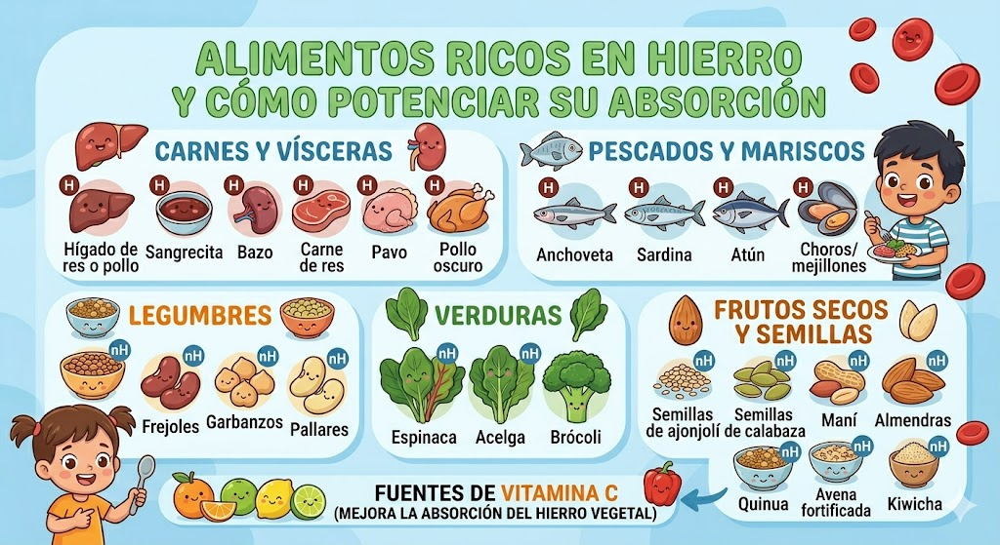

Aprende a identificar, prevenir y combatir la anemia, una enfermedad que afecta a millones de niños y adultos en el Perú y el mundo.
¿Qué es la anemia?
La anemia es una enfermedad de la sangre que ocurre cuando el cuerpo no tiene suficientes glóbulos rojos sanos, o cuando estos glóbulos no tienen suficiente hemoglobina, una proteína que transporta el oxígeno a todo el cuerpo.
Sin suficiente oxígeno, los órganos y tejidos no pueden funcionar bien, lo que produce sensación de cansancio, debilidad y otros síntomas que afectan la vida diaria.
Tipos de anemia
La más común. El cuerpo no tiene suficiente hierro para producir hemoglobina. Es frecuente en niños, adolescentes y mujeres embarazadas.
Falta de vitamina B12 o ácido fólico. Sin estas vitaminas, el cuerpo no puede producir suficientes glóbulos rojos sanos.
Hereditaria. Los glóbulos rojos tienen forma de hoz en lugar de ser redondos, lo que dificulta el transporte de oxígeno.
El cuerpo deja de producir suficientes células sanguíneas. Puede ser causada por enfermedades autoinmunes o exposición a toxinas.
Causas y síntomas
¿Cómo se diagnostica?
El médico sigue un proceso paso a paso para confirmar si tienes anemia. Toca cada paso para ver más detalles:
El médico pregunta sobre los síntomas que sientes, tu alimentación diaria y si algún familiar ha tenido anemia antes.
El médico observa la palidez de la piel, las encías y los párpados. También escucha el ritmo del corazón y evalúa si hay cansancio visible.
Se extrae una pequeña muestra de sangre. El análisis mide la cantidad de glóbulos rojos, el nivel de hemoglobina y el hematocrito.
Si se confirma anemia, se miden también los niveles de ferritina, hierro sérico, vitamina B12 y ácido fólico para identificar el tipo exacto.
Con los resultados, el médico determina el tipo de anemia y receta suplementos de hierro, vitaminas, cambios en la dieta o medicamentos según el caso.
📊 Niveles normales de hemoglobina (según la OMS)
⚠️ Un valor por debajo de estos niveles indica anemia y debe ser evaluado por un médico.
Alimentos ricos en hierro
Una alimentación variada es la mejor manera de prevenir la anemia ferropénica:

📷 Imagen de alimentos ricos en hierro
💡 Tip: Tomar jugo de naranja junto con los alimentos ricos en hierro mejora hasta un 80% la absorción del mineral. ¡Evita el té o café durante la comida!
Cómo prevenirla
Consumir alimentos ricos en hierro como carnes, lentejas, espinaca y sangrecita ayuda a producir más hemoglobina y prevenir la anemia.
En algunos casos, los médicos recomiendan suplementos de hierro para evitar la deficiencia, especialmente en niños y embarazadas.
Los chequeos médicos y análisis de sangre permiten detectar la anemia tempranamente y comenzar el tratamiento adecuado.
Eliminar parásitos intestinales ayuda a que el cuerpo absorba mejor los nutrientes y evita la pérdida de hierro.
Mantener una buena higiene, tomar agua segura y lavar bien los alimentos reduce infecciones relacionadas con la anemia.
Consumir naranja, limón o mandarina junto con alimentos ricos en hierro mejora la absorción del mineral en el organismo.
Datos curiosos
¡Cosas que quizás no sabías sobre la anemia!
Más de 2 mil millones de personas tienen anemia según la OMS. ¡Es la enfermedad nutricional más común del planeta!
La anemia en niños pequeños afecta el desarrollo cerebral y puede causar problemas de aprendizaje a largo plazo.
Un científico confundió una coma decimal y reportó que la espinaca tenía 10 veces más hierro del real. ¡Así nació el mito!
La sangrecita de pollo tiene hasta 10 veces más hierro que la carne de res. ¡El superalimento peruano contra la anemia!
Tomar jugo de naranja con tu comida mejora la absorción del hierro hasta en un 80%. ¡El té y el café la reducen!
En el Perú, 4 de cada 10 niños menores de 3 años tienen anemia. Es uno de los mayores problemas de salud pública del país.
Más de 2 mil millones de personas tienen anemia según la OMS. ¡Es la enfermedad nutricional más común del planeta!
La anemia en niños pequeños afecta el desarrollo cerebral y puede causar problemas de aprendizaje a largo plazo.
Un científico confundió una coma decimal y reportó que la espinaca tenía 10 veces más hierro del real. ¡Así nació el mito!
La sangrecita de pollo tiene hasta 10 veces más hierro que la carne de res. ¡El superalimento peruano contra la anemia!
Tomar jugo de naranja con tu comida mejora la absorción del hierro hasta en un 80%. ¡El té y el café la reducen!
En el Perú, 4 de cada 10 niños menores de 3 años tienen anemia. Es uno de los mayores problemas de salud pública del país.
Explora estas fuentes confiables para aprender más sobre la anemia, su prevención y su impacto en el Perú.
Situación actual de la anemia en el Perú y estadísticas nacionales.
Información, consejos y acciones para prevenir la anemia infantil.
Pediatras explican la importancia del hierro desde los primeros meses de vida.
Campaña de concientización para combatir la anemia en el país.